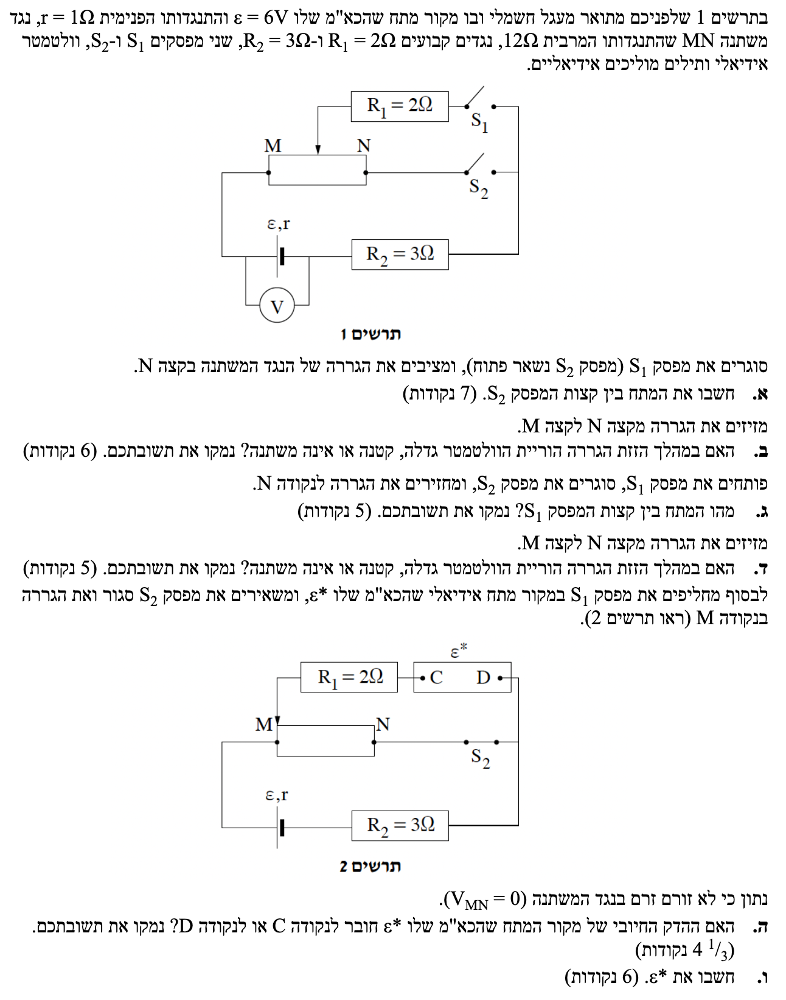
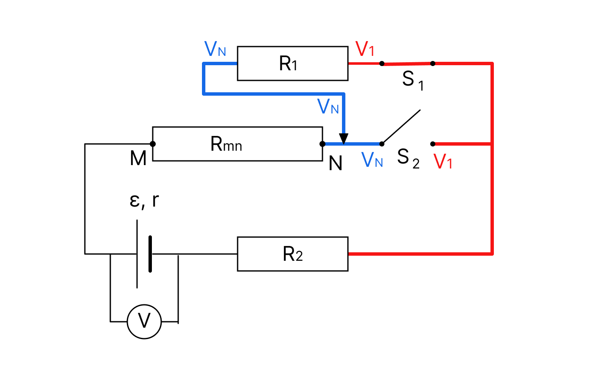
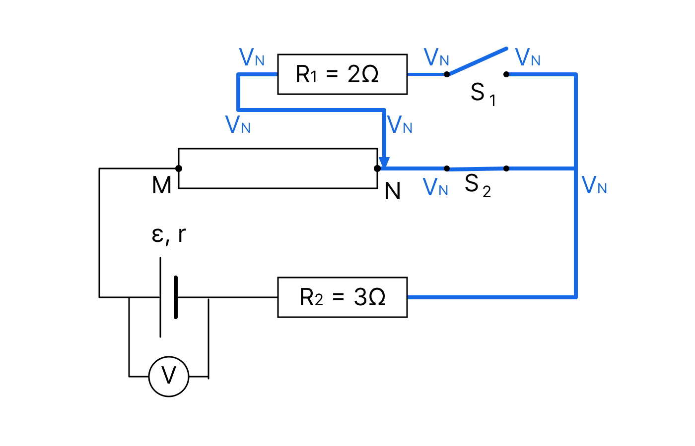
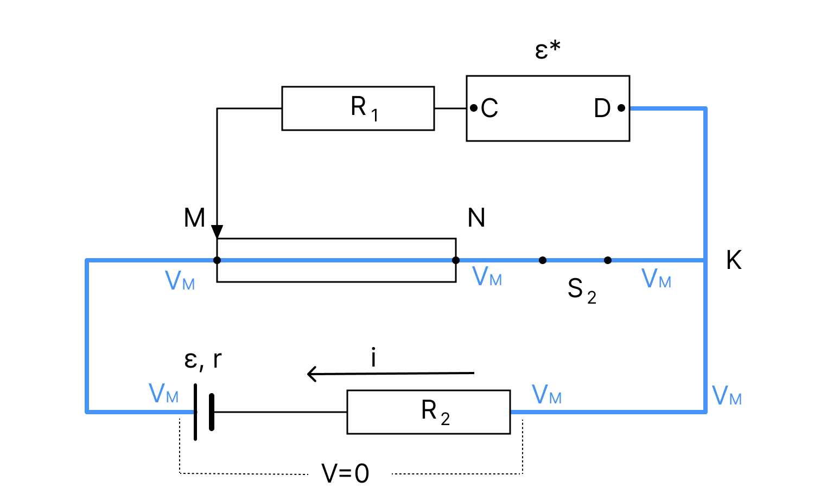

פתרון מלא, שלב-אחר-שלב, הכולל המחשות חזותיות והרחבות פדגוגיות.

לפני שניגש לסעיפי המפסקים, בואו נכיר כלי ויזואלי ועוצמתי לניתוח מעגלים שנקרא "שיטת צביעת הפוטנציאלים". השיטה הזו עוזרת לנו "לראות" מתחים ומפסקים בעיניים.
נשתמש בשיטה הזו במפורש בסעיפים ג' ו-ד' כדי לפצח את השאלה בקלות.
נרכז את הנתונים המספריים מתוך התרשים והפתיח. כל הנתונים במערכת יחידות תקנית (MKS), לכן אין צורך בהמרה.
אנו מחפשים את המתח בין קצות המפסק \(S_2\). נסמן מתח זה כ-\(V_{S2}\).
נשתמש בנוסחאות מתוך דף הנוסחאות, בפרק אלקטרומגנטיות:
\(V_{ab} = \varepsilon - rI\) \(V = RI\) \(R_T = \Sigma R_i\) \(\Sigma \varepsilon = \Sigma IR\)כאשר הגררה בנקודה N ומפסק \(S_2\) פתוח, לא יכול לזרום זרם דרך \(S_2\). הזרם יוצא מההדק החיובי, מגיע לצומת M, עובר דרך כל הנגד המשתנה עד לנקודה N. מכיוון ש-\(S_2\) פתוח, המסלול היחיד להמשך הוא דרך הגררה (שנמצאת ב-N), דרך \(R_1\), דרך המפסק הסגור \(S_1\), ומשם דרך \(R_2\) חזרה לסוללה. לפנינו מעגל טורי פשוט!

נחשב את ההתנגדות השקולה של המעגל הטורי (כולל ההתנגדות הפנימית):
נחשב את הזרם במעגל:
כעת, נחשב את המתח על המפסק \(S_2\). המפסק מחובר בין נקודה N לבין התיל הימני המשותף (נסמנו כצומת K בתרשים שלנו). נחשב את הפרש הפוטנציאלים בין N ל-K. נבחר מסלול דרך ההדק העליון: מנקודה N הזרם זורם דרך הגררה, הנגד \(R_1\) ומפסק \(S_1\) אל צומת K. לכן, הפרש הפוטנציאלים הוא בדיוק המתח הנופל על הנגד \(R_1\):
נעגל את התוצאה ל-3 ספרות מהותיות.
מזיזים את הגררה מקצה N לכיוון קצה M. שאר תנאי המעגל נשארו כפי שהיו (מפסק \(S_1\) סגור, \(S_2\) פתוח).
לקבוע האם הוריית הוולטמטר (המודד את מתח ההדקים של הסוללה) גדלה, קטנה או אינה משתנה, ולנמק.
כאשר מזיזים את הגררה לכיוון M, אורך החלק הפעיל של הנגד המשתנה (החלק שנמצא במסלול הזרם בין M לבין הגררה) מתקצר. מכיוון שמפסק \(S_2\) פתוח, החלק של הנגד בין הגררה ל-N אינו סוגר מעגל ולכן אינו משפיע. לפיכך, ההתנגדות של המעגל הטורי קטנה.
נסתכל על משוואת הזרם: \(I = \frac{\varepsilon}{R_T}\). כאשר המכנה \(R_T\) קטן, הזרם הכללי במעגל, \(I\), גדל.
הוולטמטר מחובר במקביל לסוללה ומודד את מתח ההדקים שלה. נציב את המסקנה שלנו במשוואת מתח ההדקים:
מכיוון שהכא"מ \(\varepsilon\) וההתנגדות הפנימית \(r\) קבועים, וכפי שהראינו הזרם \(I\) גדל, הביטוי \(I\cdot r\) (מפל המתח הפנימי) גדל. כתוצאה מכך, הערך הכללי של \(\varepsilon - I\cdot r\) קטן.
פותחים את מפסק \(S_1\), סוגרים את מפסק \(S_2\), ומחזירים את הגררה לנקודה N.
את המתח בין קצות המפסק הפתוח \(S_1\), יחד עם נימוק (נעזר בשיטת צביעת הפוטנציאלים).
נשתמש בחוק אוהם לנגד כדי להראות שאין מפל מתח על ענף שאין בו זרם. וכמובן - שיטת צביעת הפוטנציאלים.
\(V = RI\)ננתח את המעגל במצבו החדש ונצבע אותו:
בואו נבחר נקודת ייחוס (למשל, התיל הימני שאחרי הנגד \(R_2\)) ונצבע אותה בירוק. כל מקום שהצבע הירוק מגיע אליו ללא התנגדות נמצא באותו פוטנציאל!

הביטו בתרשים הצבוע למעלה ועקבו אחרי הצבע הירוק:
1. הצד הימני של מפסק \(S_1\) מחובר לתיל הימני, ולכן הוא צבוע בירוק.
2. מפסק \(S_2\) סגור (מתפקד כחוט). לכן, הצבע הירוק עובר דרכו ומגיע לנקודה N.
3. הגררה נמצאת ב-N, ולכן גם היא ירוקה. התיל מוביל אל הנגד \(R_1\). מכיוון שמפסק \(S_1\) פתוח, לא זורם זרם דרך \(R_1\) (\(I=0\)). חוק אוהם קובע שהמתח על הנגד הוא \(V = 0 \cdot R_1 = 0\). אם אין מפל מתח, הצבע לא משתנה! הצבע הירוק עובר דרך הנגד ומגיע עד לצד השמאלי של מפסק \(S_1\).
המסקנה הוויזואלית: שני צידי המפסק הפתוח \(S_1\) צבועים בדיוק באותו הצבע (ירוק). לכן, הפרש הפוטנציאלים ביניהם הוא אפס.
באותו מצב כמו בסעיף ג' (\(S_1\) פתוח, \(S_2\) סגור), מזיזים את הגררה מנקודה N לנקודה M.
האם הוריית הוולטמטר משתנה במהלך תנועת הגררה? נמקו.
שוב נשתמש בראייה הוויזואלית של נתיבי זרם מול ענפים "מתים".
הוולטמטר מודד את מתח ההדקים של הסוללה, אשר תלוי אך ורק בזרם הכללי היוצא ממנה (\(V = \varepsilon - Ir\)). הזרם נקבע לפי ההתנגדות השקולה של המעגל כולו.
בואו נצבע במוחנו את מסלול הזרם. מאיפה הזרם יוצא ולאן הוא הולך? הוא יוצא מהסוללה, מגיע לנקודה M, זורם דרך כל הנגד המשתנה עד לנקודה N, עובר דרך המפסק הסגור \(S_2\), ומשם חזרה דרך \(R_2\) לסוללה.
ומה קורה לגררה? הגררה מחוברת לענף העליון דרך \(R_1\) ומפסק \(S_1\). אבל רגע, מפסק \(S_1\) פתוח! משמעות הדבר היא ששום זרם אינו יכול לזרום דרך הגררה לשום מקום. הגררה רק מרחפת מעל הנגד המשתנה כמו אנטנה שלא מחוברת לכלום בקצה השני.
גם כאשר הגררה מחליקה שמאלה וימינה, הזרם של המעגל ממשיך לזרום דרך כל אורך הנגד המשתנה (מ-M עד N) ללא שום הפרעה. התנגדות הנגד המשתנה במסלול הפעיל נשארת קבועה לחלוטין על \(12\text{ }\Omega\).
מכיוון שההתנגדות השקולה אינה משתנה, הזרם לא משתנה, ומתח ההדקים נשאר קבוע.
מצב חדש (תרשים 2):
לקבוע לאיזו נקודה (C או D) חובר ההדק החיובי של המקור \(\varepsilon^*\), כולל נימוק.
ראשית, נוכיח מהו כיוון הזרם במעגל התחתון (ולא נניח אותו מראש).
נתון שלא זורם זרם בנגד המשתנה MN, ולכן אין עליו מפל מתח: \(V_M = V_N\).
בנוסף, מפסק \(S_2\) סגור ומחבר את נקודה N לתיל הימני המשותף (צומת K). לכן: \(V_N = V_K\). המסקנה היא ששני קצות המסלול התחתון נמצאים באותו פוטנציאל: \(V_M = V_K\).
כעת נתבונן במסלול התחתון (הכולל את הסוללה \(\varepsilon\) והנגד \(R_2\)). ההדק החיובי של הסוללה פונה שמאלה (לכיוון M), ולכן הסוללה מנסה "להעלות" את הפוטנציאל ב-6V מ-K לכיוון M.

אך מכיוון שהפוטנציאל הכולל אינו משתנה (\(V_M = V_K\)), חייב להיות גורם ש"יוריד" בחזרה את ה-6V האלו. מפל מתח על נגדים (\(R_2\) ו-\(r\)) מתרחש אך ורק בכיוון הזרם. לכן, הזרם חייב לזרום מימין לשמאל (מ-K ל-M), כדי ליצור מפל מתח שיקזז את עליית המתח של הסוללה. הוכחנו שהזרם זורם מ-K ל-M!
נרשום את חוק הלולאות בצורה מדויקת מ-K ל-M (כאשר אנו הולכים עם כיוון הזרם שהוכחנו):
מכיוון ש-\(V_M = V_K\), המשוואה מצטמצמת ל:
הזרם שמגיע לצומת M חייב להמשיך הלאה. מכיוון שאין זרם בענף האמצעי (MN), כל הזרם של \(1.5\text{ A}\) פונה לענף העליון (מ-M ימינה לכיוון K).
נרשום את משוואת הפוטנציאלים מ-M ל-K דרך הענף העליון. אנו הולכים עם הזרם דרך \(R_1\), וחוצים את המקור החדש. נסמן את המתח עליו כ-\(V_{CD} = V_D - V_C\) (עלייה בפוטנציאל מ-C ל-D):
שוב, בגלל ש-\(V_M = V_K\), נקבל:
קיבלנו ש-\(V_{CD}\) הוא ערך חיובי (\(+3\text{V}\)). משמעות הדבר היא שהפוטנציאל בנקודה D גבוה מהפוטנציאל בנקודה C. כדי לעלות בפוטנציאל כאשר חוצים מקור מתח, אנו חייבים לחצות אותו מההדק השלילי אל ההדק החיובי. לכן, נקודה D היא ההדק החיובי.
כל הנתונים מסעיף ה', וכן התוצאות שהשגנו: הזרם הוא \(1.5\text{ A}\), והמתח מ-C ל-D הוא הכא"מ \(\varepsilon^*\).
את הערך המספרי של \(\varepsilon^*\).
חוק קירכהוף למתחים. כא"מ הסוללה האידיאלית שווה להפרש הפוטנציאלים בין קצותיה:
\(\varepsilon^* = V_D - V_C\)למעשה, עשינו את החישוב המלא במהלך ההנמקה בסעיף ה'. ראינו כי ההפרש \(V_{CD}\) שנדרש כדי לאזן את מפל המתח על הנגד \(R_1\) (כך שהפוטנציאל ב-K יחזור להיות שווה לפוטנציאל ב-M) הוא בידיוק מפל המתח על הנגד \(R_1\).